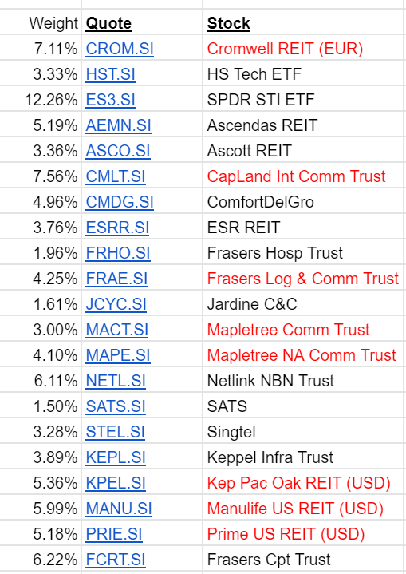

**PAGE UNDER CONSTRUCTION - pls come back later**
Disclaimers:
1) Investments come with risk. Do your own research.
2) You can lose ALL your capital. Only invest if you can afford to lose it all.
3) All posts here are personal opinions. NOT financial / investment advice.
20 May 21:
Is traditional finance (trad-fi) dead?
No, of course not. With the volatility of the crypto space, it would be silly to put all your eggs into the crypto basket and cry when the bottom of the basket falls out. We all still lead real-world lives (somewhat) and have real-world obligations (paying the mortgage, feed the kids, etc) so we're gonna have to keep with traditional finance and investment. Investments are all listed on the Singapore Exchange (SGX), mainly due to tax simplicity and convenience of tracking/ understanding the market.
Portfolio diversification:
This is my personal investment style, whether thru traditional finance (Equities) or Crypto. It's always less exciting to have your returns channelled through 15-20 assets within a portfolio, vs just holding a single asset. But it allows me to sleep soundly at night, and that's just priceless.
Model portfolio of REITs and capital-appreciating stocks, all weighted between 5-10%

*Red denotes REITs with significant office exposure. Due to Covid and the wave of WFH, am looking for an opportunity to go underweight these stocks.